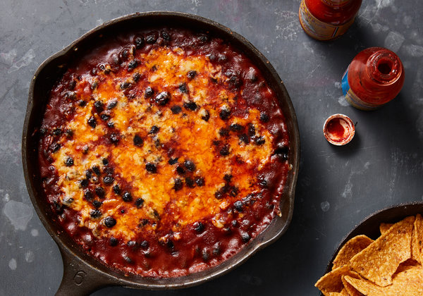

Cheesy, Spicy Black Bean Bake |
|
YIELD - 4 servings TIME - 15 minutes Whether or not you’ve fallen for this cheesy white-bean tomato bake, we’d like you to meet its bolder counterpart, smoky and spiced, with lots of melty cheese. Black beans shine in a deep-red mixture of fried garlic, caramelized tomato paste, smoked paprika and cumin. The whole skillet gets coated in a generous sprinkling of sharp Cheddar or Manchego cheese, then baked until melted. The final result is what you hope for from a really good chili or stew, but in a lot less time. For a spicier rendition, add a pinch of cayenne with the paprika, or douse the final skillet with hot sauce. Serve with tortillas, tortilla chips, rice, a baked potato or fried eggs. |
 |
|
Step 1
Heat the oven to 475 degrees. In a 10-inch ovenproof skillet, heat the olive oil over medium-high. Fry the garlic until lightly golden, about 1 minute. Stir in the tomato paste, paprika, red-pepper flakes and cumin (be careful of splattering), and fry for 30 seconds, reducing the heat as needed to prevent the garlic from burning. Step 2
Add the beans, water and generous pinches of salt and pepper, and stir to combine. Sprinkle the cheese evenly over the top then bake until the cheese has melted, 5 to 10 minutes. If the top is not as browned as you’d like, run the skillet under the broiler for 1 or 2 minutes. Serve immediately. |
|